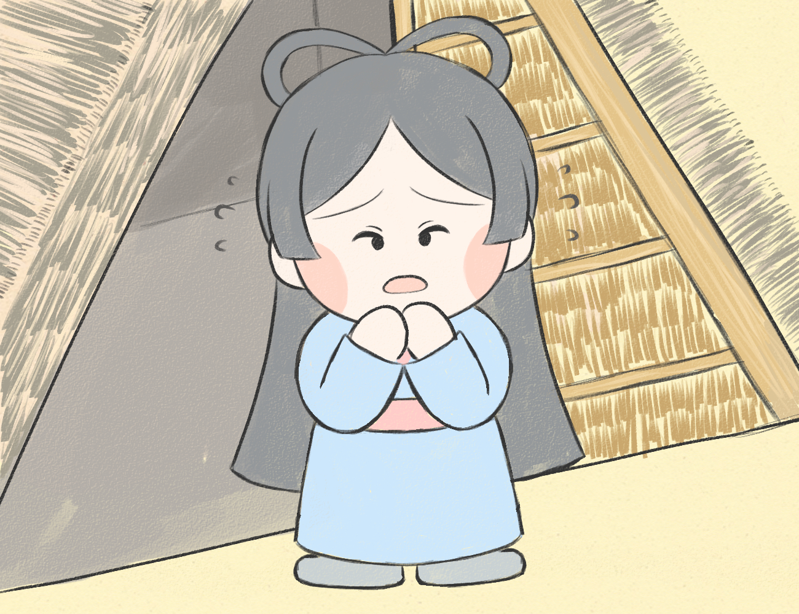

トヨタマヒメの産屋
海の宮で出会ったトヨタマヒメと結婚したヤマサチヒコは地上に戻ることになった。その後を追うようにトヨタマヒメも地上にやってきました。
トヨタマヒメは妊娠しており、神の子どもを海で産むわけにはいかないので地上にやってきました。これを聞きヤマサチヒコは、浜辺に鵜の羽で屋根をおおい産屋を建てました。

産屋に入ったトヨタマヒメは「子どもを産む時は本来の姿に戻ってしまうので産む姿は決して見ないでください」とヤマサチヒコに告げました。
ところがヤマサチヒコはトヨタマヒメの忠告を不思議に思い、産屋を覗いてしまいました。
するとそこにはトヨタマヒメの姿はなく、一匹の大きなサメが身をくねらせていた。ヤマサチヒコは驚いてしまい慌てて逃げてしまいました。
トヨタマヒメは本当の姿を見られたことを恥ずかしく思い、生まれた子どもを置いて海に帰ってしまいました。自分がいなくても子どもが元気に育つように、トヨタマヒメは自分の乳を洞窟に貼り付けました。
このお話の舞台となった地が宮崎県の日南にある鵜戸神宮です。鵜戸神宮についてはこちらから。